|
蜂鸟M离线方案开发指导手册
v1.0.4
|
• 进入云知声开放平台：http://dev.hivoice.cn/
• 点击右上角的 登陆/注册，弹出如下窗口：
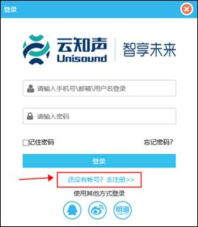
• 如无账号，请点击 去注册；
• 注册方式有“手机账号注册”、“邮箱账号注册”两种方式
• 如已有云知声开发账号请忽略本步骤；
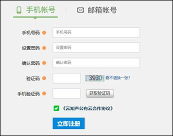
• 选择邮箱账号注册需点击激活邮件后才能正常登陆
注册成功后，为确保账号可用，请登陆云知声账号；
登陆后，点击右上角的 完善资料，输入相关必填信息。
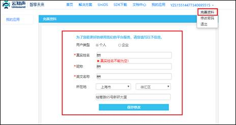
1. 联系云知声商务，申请开通云知声智能设备平台权限，获取离线标准开发板；
2. 开通权限后，产品控制台入口可见，在控制台-产品接入下。
（1）用户登陆云知声开放平台（http://dev.hivoice.cn/），点击导航栏中的 控制台，点击 产品接入 进入产品接入控制台。
（2）进入产品控制台后，点击 创建产品。
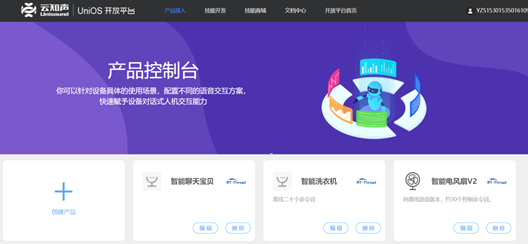
（3）云知声智能设备平台提供不同场景，用以定制不同语音产品形态，此处选择智能家居（纯离线）
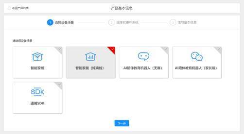
（4）选择系统与芯片平台，选择 蜂鸟M芯片
该页面点击芯片旁的？按钮，可以获取蜂鸟芯片产品手册。
选择设备类型：
1） 选择具体产品，云知声针对细分的终端产品类型进行了初始功能定义，提供了更准确的语音识别性能与预置的控制指令。
联系商务，获取具体产品方案权限。
2） 选择通用，根据开发者需求，自主合成终端产品能力 ，覆盖的使用场景更加广泛。
（5）填写产品信息，包括名称与描述
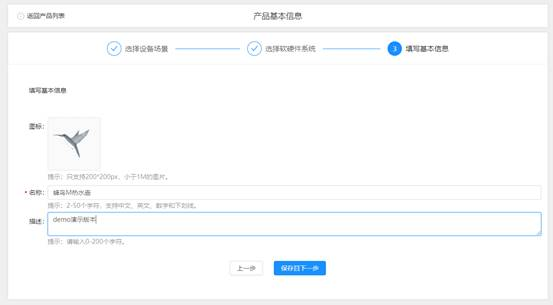
（6）确认所选项无问题，点击 保存且下一步，即初步创建产品成功
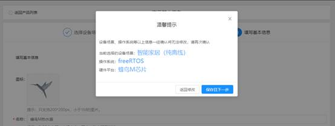
（1）创建产品版本，填写版本号及版本信息，点击下一步
• 产品创建成功后，系统会自动为该产品分配Appkey与AppSecret，此为该产品唯一识别ID和密匙
• 一个产品可维护多个版本，可通过版本号与版本描述来区分
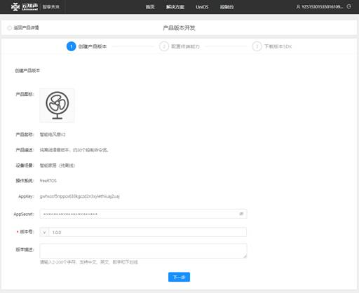
（1） 选择前端信号处理方案
蜂鸟M芯片通用板支持单麦克风收音，开发者针对不同的使用场景，选择识别距离，实现对声音信号的处理方式，提升识别结果的准确率。
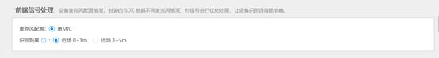
（2）PIN脚配置
蜂鸟M支持无代码实现芯片引脚配置，通过参数配置自定义GPIO、PWM、UART等端口的输出信号，直接控制外围电路。
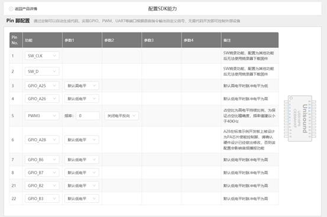
（3）自定义产品唤醒词，以及唤醒回复语
• 支持3-6个字的唤醒词自定义配置，最多支持10组唤醒词的添加；
• 为保证语音产品有最佳唤醒体验，平台针对唤醒词的发音提供打分功能，并会提供具体指导信息；
• 涉及黄赌毒、政治敏感、低俗辱骂等不合规内容的唤醒词不可使用；
• 完整唤醒词定义规则可点击界面上《唤醒词自定义规则》；
• 支持按照产品使用场景自定义唤醒灵敏度；
• 自定义设置唤醒回复语，唤醒回复最多支持10条，设置后将随机播报。
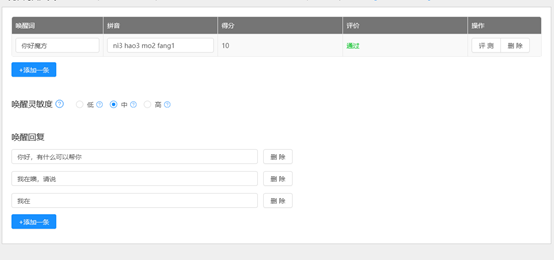
（4）按照规则填写命令词与应答语
如下图所示，点击“如何自定义”为语法格式说明与规则介绍；
点击“点这里添加”则弹出输入框，可以在页面内直接输入命令词与应答语的定义；
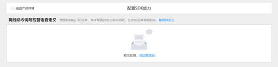
如不满足语法格式要求平台则会进行实时提示。输入完成后选择命令词识别灵敏度，点击“确定”即可提交。
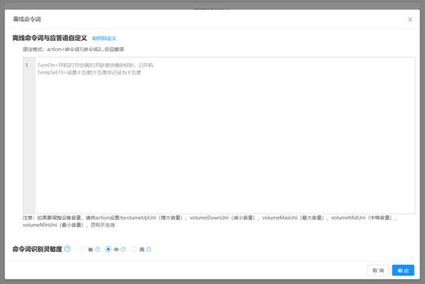
提交后仍可对词表基础信息进行编辑；
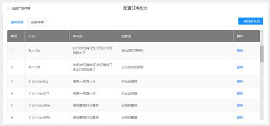
点击“控制详情”切换TAB，将控制行为与引脚输出信号进行对应，实现对控制指令的信号输出的配置。
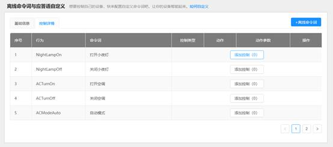
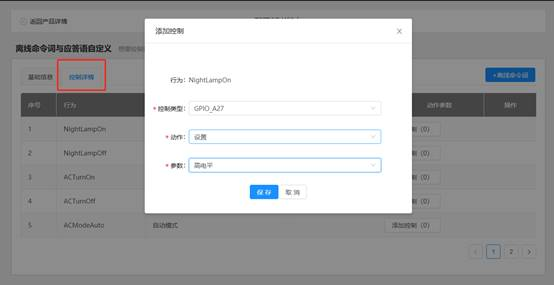
语法格式说明与规则介绍
为方便产品构建，平台定义了一套语法格式，语法格式组成为：
|
action=命令词1|命令词2...@回复语 |
举例：TempSet15=设置十五度|十五度@已设为十五度
action 为一个控制指令的唯一标识，用户对着设备说出“设置十五度”“十五度”并被语义理解时，如已对接设备，语义理解模块会将TempSet15传给设备。
命令词 为想要定义的语音话术，用户必须按照定义的话术说出才有效。如用户可以使用“设置十五度”“十五度”来实现同一个设置温度15度的控制。
回复语 为针对该条控制指令的设备回复播报。
action、命令词、回复语均由用户定义。等号前的action为唯一值；等号后的命令词可输入多个，以 | 符号分割；@后为回复语，每个控制指令可以定义对应的回复。
点击语法格式后的 问号，可看到语法格式要求：
Ø action由英文、下划线“_”和数字组成，必须英文开头，不区分大小写，15个字符内
Ø 命令词最多支持150条，每条限 2 - 10 个字符，仅支持中文
Ø 一个action仅支持一条回复语，回复语总字数不得超过500个字符，支持中文、数字、逗号、句号、问号
点击语法句式后的 问号，可以看到针对回复播报特殊读音的标签使用说明：
Ø <py>：需要对单个汉字的发音进行纠正的场合。
注：拼音声调范围为 1 - 5，1 - 4 对应一声到四声，5对应轻声。
例：已调<py>tiao2</py>至中<py>zhong1</py>风档
播报为：已调(tiao2)至中(zhong1)风档
Ø <value>：需要将数字按照数值读法播报
例：已设为<value>15</value>度
播报为：已设为十五度
Ø <code>：需要将数字按照数字串逐位播报
例：已设为<code>15</code>度
播报为：已设为一五度
|
开发者注意：
1. 产品默认支持音量大小调节，音量调节控制默认句式如下： volumeUpUni=增大音量 volumeDownUni=减小音量 如需自定义音量与主动退出的控制话术与应答播报，可在语法文件内添加以上控制句式，只需保持=号前的action不变，修改=后的内容即可。 举例如下： volumeUpUni=大声一点|调大声点@已为您调高音量 exitUni=拜拜|再见@好的，那我先退下了 2. 产品内置音量等级三档控制逻辑，默认不开启。如需使用该逻辑，可在定义离线命令词与播报语处，添加词条后生效： 最大音量 volumeMaxUni 中等音量 volumeMidUni 最小音量 volumeMinUni 如希望添加最大音量调节，可参考下方举例添加句式： volumeMaxUni=最大音量|音量调到最大@已调至最大音量
3. 用户可以在离线命令词自定义部分，指定特定的action，定义非语音交互的应答语播报，用于非正常语音交互的情景。 开发者需从指定文件夹获取此部分定制的语音音频文件，并根据产品定义修改源码。可参见文内 5.3 播报逻辑开发。 格式如下： Special_Replies@回复语1|回复语2|回复语3 如警报播报：以智能烧水壶为例，产品内传感器检测到缺水状态，自动语音警报； 如极限播报：空调指令“升高温度”，正常播报为“温度已升高”；当温度到上限时，播报“温度已调至最高”。 举例如下： Special_Replies@内丹干烧|水壶缺水|没水啦|主人请加水
4. 用户可以在离线命令词自定义部分，指定特定的竞争词（可理解为无效命令词），防止一定概率的误识别。 格式如下： Special_Gabages=命令词1|命令词2|命令词3|... 以空调产品为例，并没有高于32度的温控指令，用户说出“三十六度”时，不希望空调识别到“十六度”； 举例如下： 举例：Special_Gabages=三十六度|四十六度|五十六度|六十六度 |
（5）免唤醒命令词
无需唤醒，说出命令词即可控制设备，此处的免唤醒命令词，需先在离线命令词定制模块设定后，方可进行选择配置。
免唤醒命令词生效后，设备会处于待唤醒状态。
免唤醒命令词 与 唤醒词 可同时存在，也可单一存在，两者数量之和不可超过10个。如针对某些特定语音产品，可只使用免唤醒命令词来替代唤醒词。
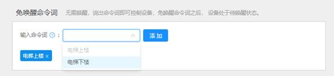
（6）选择语音识别模型
蜂鸟M芯片方案支持对声学模型进行选择，默认为云知声针对蜂鸟M芯片定制的经过算法优化的通用声学模型。
如当前系统默认的声学模型性能无法满足用户需求时（注：此处用户需求，指经过语音性能量化测试的明确指标），可以使用云知声模型训练平台，采集特定离线命令词的语音训练数据并进行模型定制。
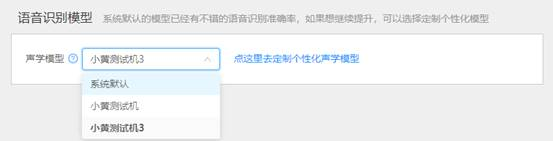
（7）针对产品定位，选择适合产品形态的发音人
• 活泼可爱的萱萱和KiYo，童真童趣的糖糖和天天，温柔可亲的玲玲，庄重严肃的小雯与小峰，七种音色可供选择；
• 可调节音量、语速与声音亮度；
• 提供在线试听，方便用户进行决策；
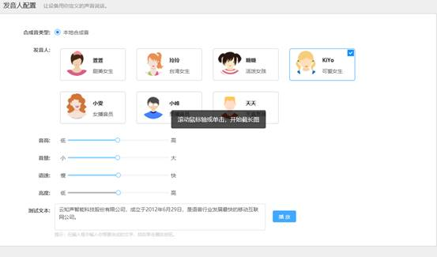
（8）其它配置
1) 开机音配置
系统自带默认开机铃声，可在页面点击试听。
如需进行开机欢迎语的自定义，也可以选择自定义内容，产品则会在开机后自动进行播报，欢迎语播报自定义限中文，可输入30个字符；也可选择不使用开机音。
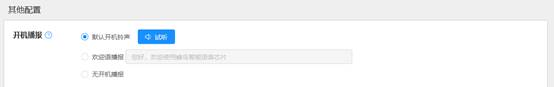
2) 识别状态退出相关配置
语音产品为保证用户体验，唤醒后一段时间内无语音输入产品会主动退出识别状态，如需输入命令词，则需再次唤醒。
此段等待用户输入语音命令的有效时间，即为“唤醒超时退出时间”。
• 为确保产品有较好的用户体验，支持5s – 60s的超时退出时间设置，默认为10秒
• 超时退出回复最多可设置2条
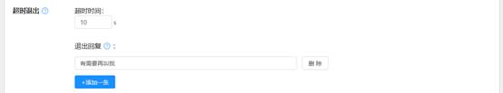
当用户想要结束对话时，也可以主动要求退出识别状态。
• 默认退出命令为“退下”“再见”，可根据产品定义修改，最多可设置3条
• 主动退出回复最多可设置2条
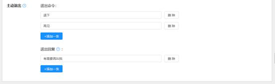
如配置完成，则可点击下一步，进入版本发布页面。
（1）产品配置开发完成，进入发布页面后，可点击 立即发布
（2）产品发布需要一定时间，可以有两种方法获取到发布成功的产品
• 发布界面下，版本发布成功后，会有下载提示
• 也可以直接返回产品详情，或关闭页面一段时间再进入智能设备平台的产品详情，页面中的版本列表处点击下载
产品详情页面可以查看已创建的产品，可以查看每个版本的配置信息，也可以对已发布成功的版本进行下载或者删除操作
同一个产品如有新需求的修改或迭代，可在产品详情页面点击产品方案的“编辑” +开发新版本，后续的操作步骤同创建产品版本时的流程一致。
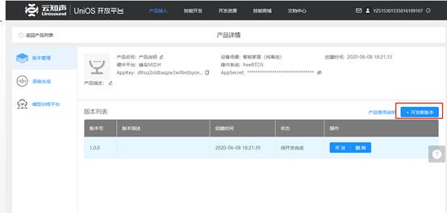
提供选择任一历史版本进行迭代开发的选项，默认为基于最新修改的版本，也可根据需求进行其它版本的选择。
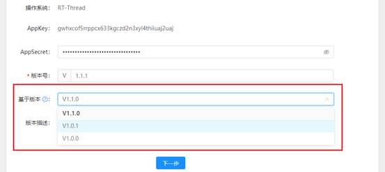
蜂鸟芯片方案支持通过云知声模型训练平台对声学模型进行定制。
当系统默认的声学模型性能无法满足用户需求时（注：此处用户需求，指经过语音性能量化测试的明确指标），可以使用模型训练平台，采集特定离线命令词的语音训练数据，进行模型快速定制，可有效提升语音识别准确率。
目前模型训练平台（https://atp.hivoice.cn/）尚未正式在云知声开放平台中开放入口，仅在蜂鸟方案产品详情里，与配置终端能力里可进入。
产品详情入口：
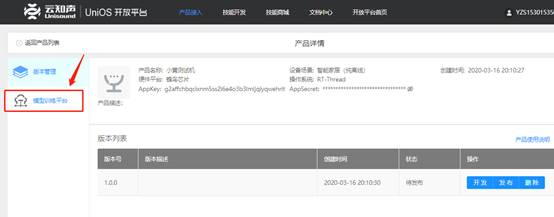
配置终端能力入口：
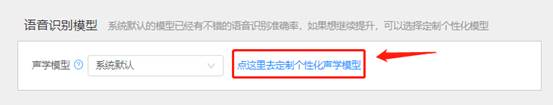
正常的声学模型的流程为：
进入训练平台首页，点击 +新建声学模型
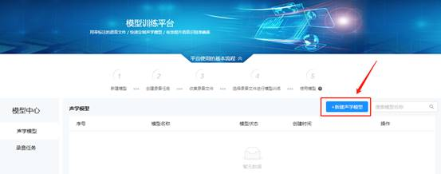
进入基础信息填写页面，需输入模型名称与模型描述。
注：一经确认无法修改
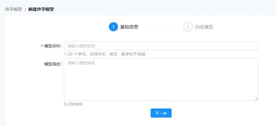
填写完毕后，点击下一步，进入训练模型页面。
由于新建模型尚未配置训练数据（即录音文件），页面显示为空，点击 +添加录音，进入添加录音页面。
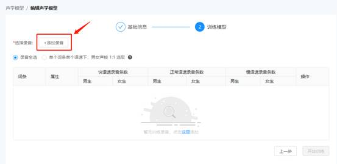
如果该账号下从未采集过任何录音，则显示“暂无数据”。
需要首先采集录音，点击 去新建录音任务
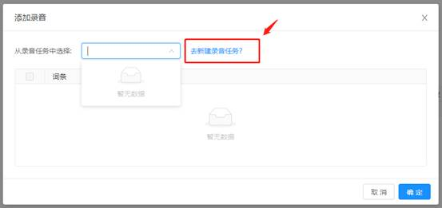
录音任务的创建可以在创建模型过程中跳转进入，如1. 新建模型 中所述。也可以在首页处点击录音任务，进入录音任务页面。
点击 +新建录音任务，进入录音任务的创建。
此处配置的录音任务，可通过录音APP获取进行采集。
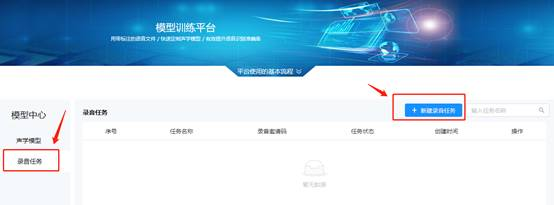
进入新建录音任务页面，进行录音任务的配置。
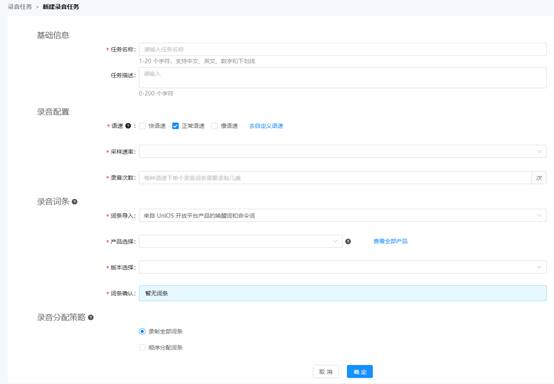
输入任务名称与任务描述，建议输入清晰明确的任务信息。
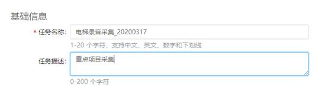
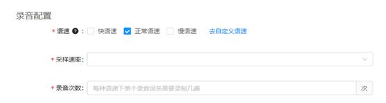
语速配置：默认仅勾选正常语速，如产品对于快语速或慢语速的唤醒与识别有要求，则可根据需求勾选。
详细语速要求可点击 ？号了解，目前系统定义的语速要求如下：
|
快语速 |
正常语速 |
慢语速 |
|
2个字：≤700ms |
2个字：≥750ms |
慢语速对录音时长无限制 |
默认语速设置不符合目标用户群体特征，可以通过自定义语速去调整语速要求：
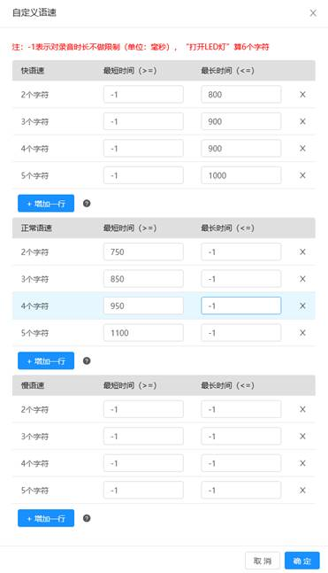
采样率：
目前仅支持16000HZ。
录音次数：
支持1-3次的配置，通常采集3次。
当前训练平台支持导入云知声开放平台内创建的产品词条，也支持自选词条的任务上传。
1） 选择直接“上传词条”，可按照模板格式直接上传内容为录音词条的Excel表格；
2） 选择“来自UNIOS开放平台产品的唤醒词和命令词”，系统会根据产品名称与版本同步词表。
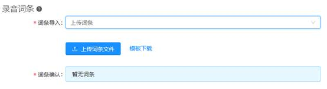
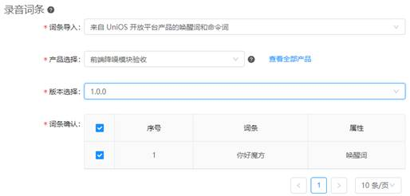
最后，选择录音任务的分配策略，系统为了减轻录音人员单次采集的压力，支持录音分组下发。
完毕后点击 确定，即可发布录音任务。
点击确定后，跳转至录音任务列表页面
此时任务尚未开始，还可对创建的录音任务进行编辑。
如任务确认无误，可开始收集录音，则点击 开始采集。此时任务状态将切换为 进行中；此时任务只可查看，不可编辑。
开始采集后，录音邀请码生效，点击变蓝的邀请码，将一键复制邀请码与录音APP下载链接，目前仅支持安卓APP。
对语音采集人发布任务时，只需粘贴，即可发送。
邀请文字如下：
|
录音邀请码：eaRmhEZf，通过链接：https://unios-udp.oss-cn-beijing.aliyuncs.com/unione/unisound_record_tool.apk 下载安装录音APP, 进入 APP 后跟随引导输入录音邀请码，即可进行录音采集，快来试试吧~ |
录音人可通过链接可下载APP工具，下载安装成功后，图标如下：
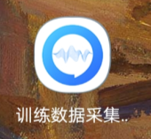
打开后，同意所有权限。
第一步，输入邀请码，点击确认。